Solved Line Word Problems
1Find the symmetric point A', of the point A = (3, 2), with the line of symmetry: r ≡ 2x + y − 12 = 0.
2Identify the type of triangle formed by the points: A = (4, −3), B = (3, 0) and C = (0, 1).
3Calculate the equation of the line that passes through the point P = (−3, 2) and is perpendicular to the line r ≡ 8x − y − 1 = 0.
4The line r ≡ x + 2y − 9 = 0 is the perpendicular bisector of the line segment AB whose endpoint A has the coordinates (2, 1). Find the coordinates of the other endpoint.
5Calculate the angle between the lines whose equations are:
1 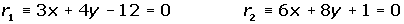
2 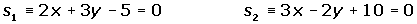
6A straight line is parallel to the line r ≡ 5x + 8y − 12 = 0, and it is 6 units from the origin. What is the equation of this line?
7Determine the equations of the angle bisectors formed by the lines:
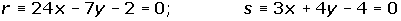
8The vertices of a parallelogram are A = (3, 0), B = (1, 4), C = (−3, 2) and D = (−1, −2). Calculate the area.
9Given the triangle formed by the points A = (−1, −1), B = (7, 5) and C = (2, 7), calculate the equations of the heights and determine the orthocenter of the triangle.
10A line is perpendicular to the line r ≡ 5x − 7y + 12 = 0 and it is 4 units away from the origin. Determine the equation of this line.
1
Find the symmetric point A', of the point A = (3, 2), with the line of symmetry: r ≡ 2x + y − 12 = 0.
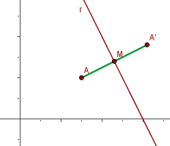
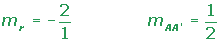
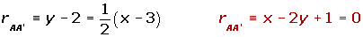
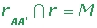
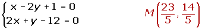
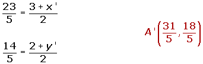
2
Identify the type of triangle formed by the points: A = (4, −3), B = (3, 0) and C = (0, 1).
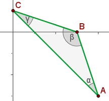
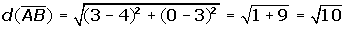
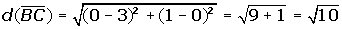
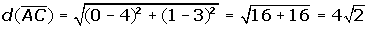
3
Calculate the equation of the line that passes through the point P = (−3, 2) and is perpendicular to the line r ≡ 8x − y − 1 = 0.
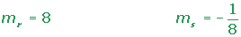
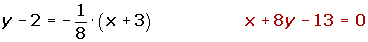
4
The line r ≡ x + 2y − 9 = 0 is the perpendicular bisector of the line segment AB whose endpoint A has the coordinates (2, 1). Find the coordinates of the other endpoint.
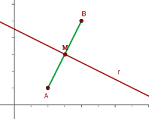
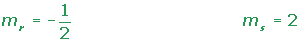
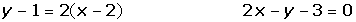
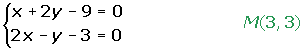
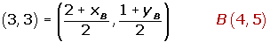
6
A straight line is parallel to the line r ≡ 5x + 8y − 12 = 0, and it is 6 units from the origin. What is the equation of this line?
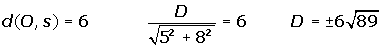
8
The vertices of a parallelogram are A = (3, 0), B = (1, 4), C = (−3, 2) and D = (−1, −2). Calculate the area.
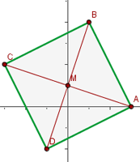
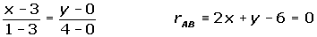
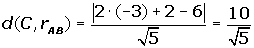
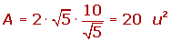
9
Given the triangle formed by the points A = (−1, −1), B = (7, 5) and C = (2, 7), calculate the equations of the heights and determine the orthocenter of the triangle.
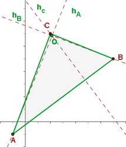
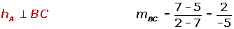
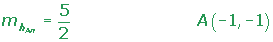
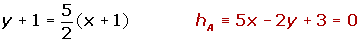
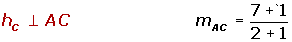
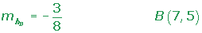
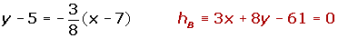
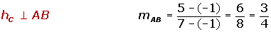
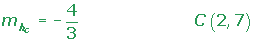
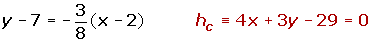
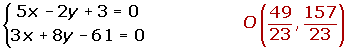
10
A line is perpendicular to the line r ≡ 5x − 7y + 12 = 0 and it is 4 units away from the origin. Determine the equation of this line.
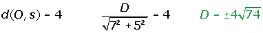